Bioseguridad y Radioprotección
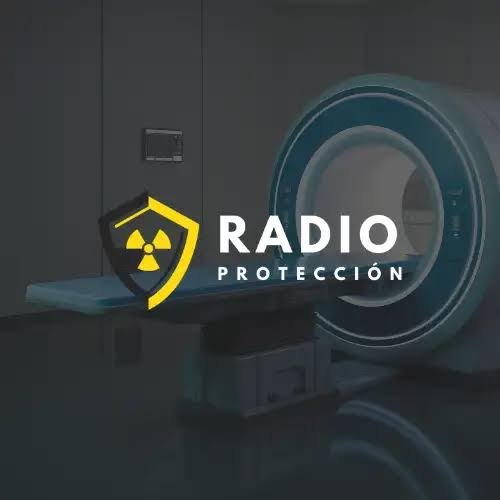
Conceptos Generales de Bioseguridad y Radioprotección
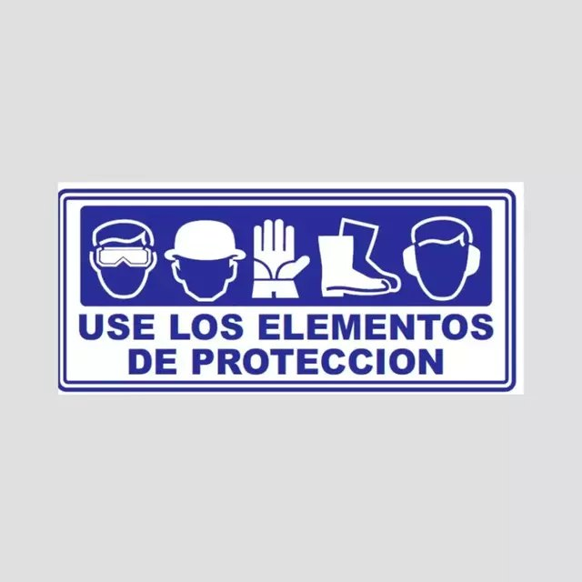
Elementos de Protección Personal (EPP): Definición, Postura y Retiro
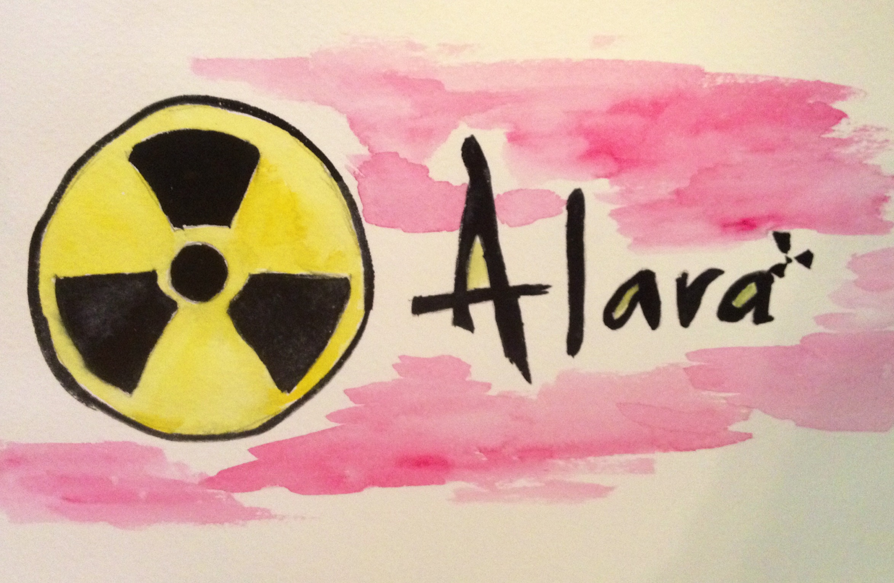
Principios de Protección Radiológica y Criterio ALARA
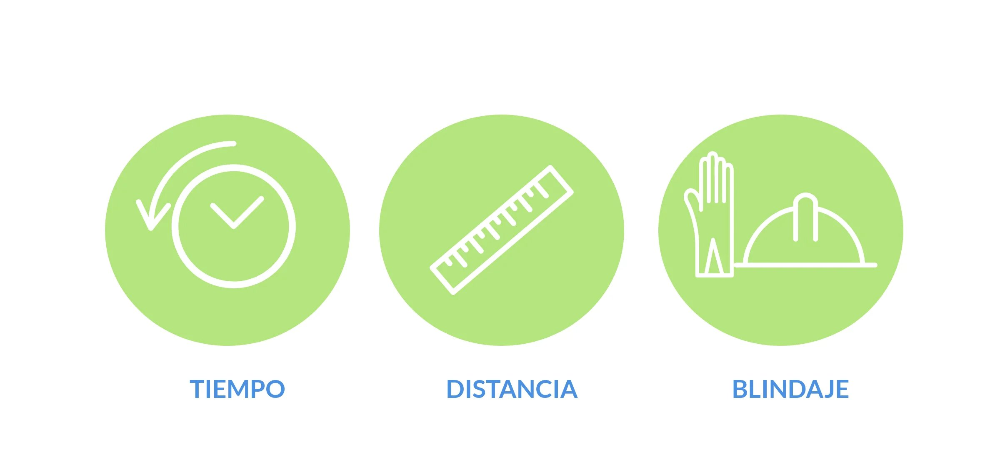
Factores Físicos: Tiempo, Distancia y Blindaje
Normativa Chilena Vigente
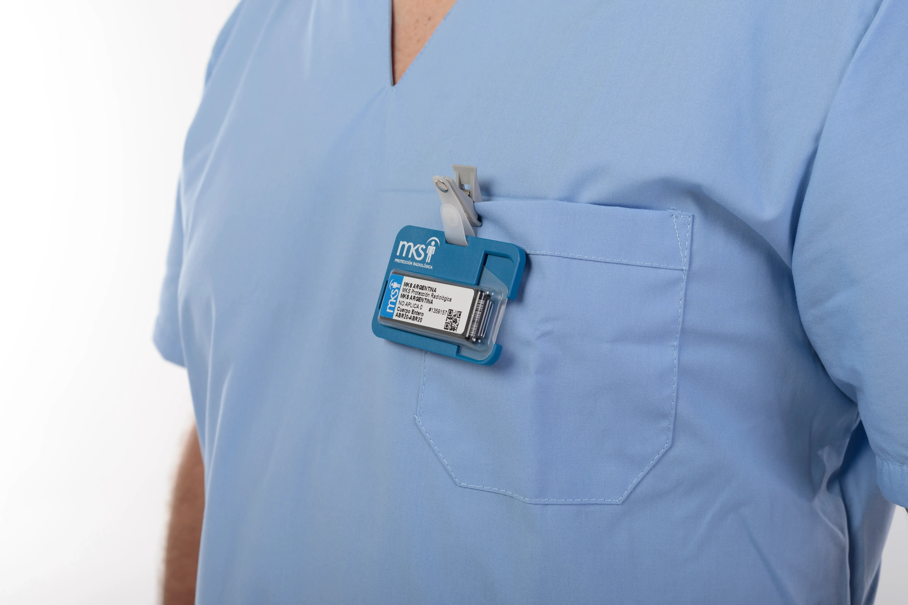
Dosimetría Personal y Elementos de Protección Plomada
Radioprotección en Pacientes Especiales
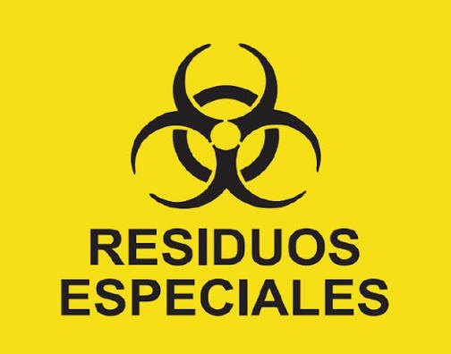
Bioseguridad Hospitalaria, IAAS y Manejo de REAS
Conceptos Generales de Bioseguridad y Radioprotección
Es el conjunto de normas, hábitos y barreras preventivas que aplicamos a diario para cuidarnos a nosotros mismos, a los pacientes y al entorno frente a riesgos biológicos (virus, bacterias, hongos), químicos (medios de contraste, desinfectantes) y físicos dentro del hospital.
• Universalidad: Asumir que todo paciente y todo fluido corporal (sangre, saliva, secreciones, orina) es potencialmente infeccioso, sin importar su diagnóstico.
• Uso de Barreras: Interponer barreras físicas (EPP, biombos) y químicas (antisépticos, desinfectantes) para evitar el contacto directo con microorganismos o sustancias de riesgo.
• Eliminación Segura de Residuos: Segregar y descartar correctamente cada material contaminado o cortopunzante según la normativa vigente (REAS).
Es la disciplina dedicada a proteger a las personas (pacientes, trabajadores expuestos y público) y al ambiente frente a los efectos nocivos de las radiaciones ionizantes, permitiendo aprovechar sus beneficios diagnósticos de manera segura.
• Radiación Ionizante vs. No Ionizante: La ionizante tiene energía suficiente para arrancar electrones de los átomos y generar daño biológico (Rayos X en Radiografía y Escáner; Rayos Gamma en Medicina Nuclear). La no ionizante no ioniza la materia (Ultrasonido en Ecografía; Campos Magnéticos y Radiofrecuencia en Resonancia Magnética).
• Dosis Absorbida (Gray - Gy): Energía que deposita la radiación por unidad de masa de tejido.
• Dosis Equivalente (Sievert - Sv): Ponderación biológica de la dosis absorbida según el tipo de radiación (en Rayos X y Gamma el factor de ponderación es 1, por lo que 1 Gy = 1 Sv).
• Dosis Efectiva (Sievert - Sv): Suma ponderada de las dosis equivalentes en todos los órganos irradiados de acuerdo con la radiosensibilidad de cada tejido.
• Efectos Deterministas vs. Estocásticos: Los deterministas (reacciones tisulares como eritema o cataratas) aparecen al superar un umbral de dosis y su gravedad aumenta con la dosis; los estocásticos (cáncer radioinducido y efectos hereditarios) no tienen umbral y su probabilidad aumenta con la dosis.
- En cualquier servicio de Imagenología ambos conceptos van de la mano: aplicas bioseguridad en todas las salas por igual (Rx, Escáner, Eco y Resonancia) y sumas la radioprotección cada vez que trabajas con equipos emisores de radiación ionizante.
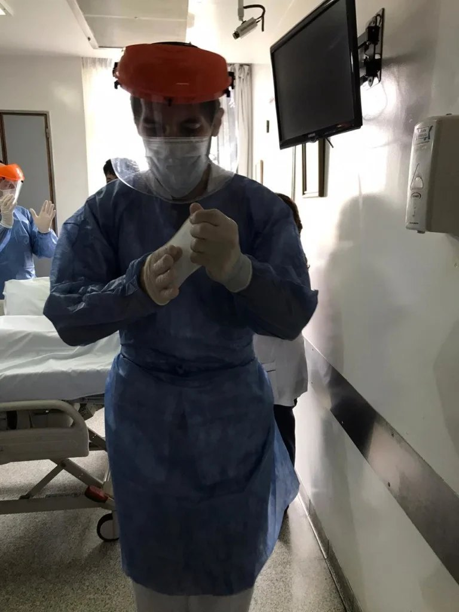
Retiro Seguro de EPPElementos de Protección Personal (EPP): Definición, Postura y Retiro
Un Elemento de Protección Personal (EPP) es cualquier prenda, accesorio o equipo diseñado para proteger al trabajador frente a riesgos específicos en su jornada clínica. En Imagenología trabajamos con EPP Clínicos/Biológicos (que actúan como barrera ante microorganismos y fluidos) y EPP Radiológicos (blindajes plomados contra radiación dispersa).
• Guantes de procedimiento o estériles: Protegen las manos ante contacto con sangre, fluidos, mucosas, piel no intacta o superficies contaminadas (por ejemplo, al canalizar vías venosas o realizar Rx portátiles).
• Mascarilla quirúrgica o respirador N95 / KN95: Protege nariz y boca frente a gotitas respiratorias (quirúrgica) o aerosoles en aislamiento aéreo como tuberculosis o COVID-19 (N95/KN95).
• Antiparras o escudo facial: Evitan el contacto de salpicaduras con la mucosa ocular.
• Pechera plástica o bata impermeable: Protege el uniforme clínico frente a salpicaduras o contacto estrecho con pacientes en aislamiento.
Se realiza antes de entrar en contacto con el paciente o ingresar a la habitación/sala de aislamiento:
1. Higienizar las manos (agua y jabón o alcohol gel) y retirar joyas, reloj y celular.
2. Colocar la bata o pechera impermeable cubriendo bien el torso y amarrándola en la espalda.
3. Colocar la mascarilla quirúrgica o respirador N95/KN95 ajustando el clip nasal y comprobando un buen sello facial.
4. Colocar las antiparras o escudo facial.
5. Calzar los guantes de procedimiento cubriendo el borde de los puños de la bata.
Retirarse los EPP con apuro es la principal causa de contaminación accidental. Sigue siempre el orden desde lo más sucio hacia lo más limpio, sin tocar la cara externa:
1. Retirar los guantes: Pellizca el borde externo de un guante con la mano contraria, sácalo dándolo vuelta (de adentro hacia afuera) y sostenlo con la mano enguantada; luego desliza tus dedos limpios por debajo del puño del segundo guante, retíralo envolviendo el primero y descártalo en bolsa amarilla (REAS).
2. Higienizar las manos con alcohol gel.
3. Retirar la bata o pechera: Desamarra los lazos (o rómpela suavemente si es desechable), deslízala desde los hombros hacia adelante enrollando la cara externa hacia adentro y deséchala.
4. Higienizar nuevamente las manos.
5. Retirar antiparras o escudo facial: Tómalos siempre desde las patillas o la banda elástica trasera, nunca desde el frente.
6. Retirar la mascarilla o respirador N95: Sujétala desde los elásticos traseros (sin tocar la parte frontal filtrante), inclina levemente la cabeza hacia adelante y deséchala.
7. Realizar lavado clínico final de manos con agua y jabón (40 a 60 segundos).
- Nunca salgas del box o sala de aislamiento con los mismos guantes o pechera para tocar manillas, teclados de consola o teléfonos.
- Si debes usar delantal plomado junto con EPP clínicos (por ejemplo, en un examen portátil en aislamiento), el delantal plomado va siempre por debajo de la bata desechable para evitar contaminar el plomo.
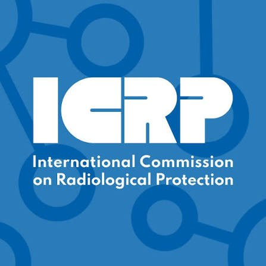
Sistema ICRP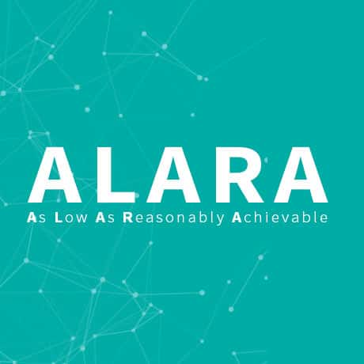
Optimización ALARAPrincipios de Protección Radiológica y Criterio ALARA
Evitar que aparezcan efectos deterministas manteniendo las dosis bajo sus umbrales, y reducir al mínimo razonable la probabilidad de efectos estocásticos a largo plazo.
Ninguna exposición a radiaciones ionizantes debe realizarse si no aporta un beneficio clínico real para el paciente que supere el riesgo radiológico. Por eso todo estudio requiere una orden médica debidamente justificada.
Sigla de "As Low As Reasonably Achievable" (Tan bajo como sea razonablemente alcanzable). En la práctica clínica significa lograr una imagen con calidad diagnóstica usando la menor dosis posible mediante colimación estricta, selección adecuada de kVp/mAs, filtración y evitando repeticiones innecesarias.
La exposición individual de los trabajadores (POE) y del público nunca debe superar los límites máximos fijados por la legislación nacional. Importante: Estos límites no aplican a la exposición médica de pacientes, donde rigen la justificación clínica y los niveles de referencia diagnóstica.
- Confirmar la identidad del paciente y que el estudio solicitado coincida con su clínica antes de irradiar.
- Colimar estrictamente al área anatómica de interés.
- Utilizar protectores gonadales o tiroideos siempre que no interfieran con la estructura a evaluar.
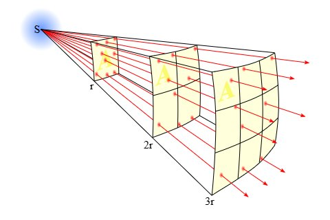
Ley del Inverso del Cuadrado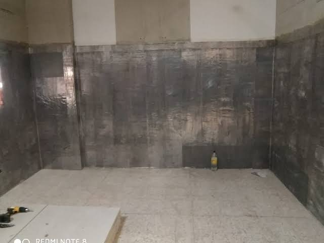
Blindaje y BarrerasFactores Físicos: Tiempo, Distancia y Blindaje
A mayor tiempo frente a una fuente emisora, mayor es la dosis acumulada. Por eso utilizamos tiempos de disparo cortos en radiografía y controlamos estrictamente los pulsos de emisión en fluoroscopia o arco en C.
Es la herramienta más rápida y efectiva en la rutina diaria. La intensidad de la radiación disminuye inversamente con el cuadrado de la distancia respecto a la fuente ($I_1 / I_2 = d_2^2 / d_1^2$). Ejemplo práctico: Si duplicas tu distancia desde la fuente (de 1 m a 2 m), la tasa de dosis cae a la cuarta parte (25%). En equipos portátiles, aléjate al menos 2 metros o ubícate detrás de un biombo plomado.
Consiste en interponer materiales de alto número atómico (Z) y alta densidad entre el haz y las personas:
• Blindaje Estructural: Muros revestidos con láminas de plomo (habitualmente 1,5 a 2 mm Pb en Rx convencional; hormigón baritado en TC), puertas plomadas y vidrio plomado en la cabina de comando.
• Barreras Primarias vs. Secundarias: Las primarias detienen el haz útil directo; las secundarias atenúan la radiación dispersa y de fuga.
- Nunca orientes el haz primario hacia la cabina de control ni hacia ventanas o puertas sin blindaje.
- Asegúrate siempre de cerrar por completo la puerta plomada de la sala antes de presionar el disparador.
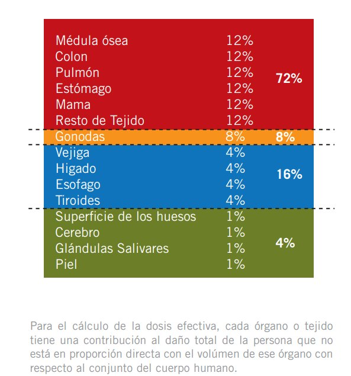
Límites D.S. N° 3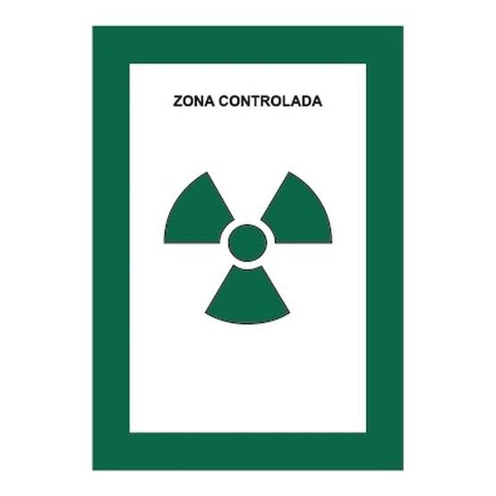
Señalética RadiológicaNormativa Chilena Vigente (D.S. N° 3 y D.S. N° 133)
Establece las medidas de protección radiológica personal y fija los límites máximos permisibles de dosis para el Personal Ocupacionalmente Expuesto (POE) en Chile.
• Cuerpo Entero (Dosis Efectiva POE): 50 mSv/año según D.S. N° 3 vigente (con recomendación internacional ICRP de 20 mSv/año promediado en 5 años).
• Cristalino: 150 mSv/año en D.S. N° 3 (actualizado por ICRP a 20 mSv/año).
• Piel, Manos y Pies (Extremidades): 500 mSv/año.
• Mujer Embarazada (POE): Una vez declarado el embarazo, la dosis equivalente al feto no debe superar 1 mSv durante el resto de la gestación (0,5 rem en el texto original del D.S. 3).
• Público General: 1 mSv/año (ICRP) / 10% del límite POE en D.S. N° 3.
Regula las autorizaciones de instalación, funcionamiento y cierre de equipos generadores de radiaciones ionizantes (1ª, 2ª y 3ª categoría), así como la Autorización de Desempeño obligatoria para toda persona que opere estos equipos (exige curso de protección radiológica aprobado y vigilancia dosimétrica).
• Zona Controlada: Sala de rayos X o sala de examen donde se requieren procedimientos específicos y dosimetría personal obligatoria.
• Zona Supervisada: Sala de comando y pasillos colindantes sujetos a vigilancia ambiental.
• Señalética Obligatoria: Trébol radiactivo (símbolo internacional), luz roja de advertencia sobre el acceso durante el disparo y leyenda "Peligro: Radiación Ionizante".
- Contar con Licencia/Autorización de Desempeño vigente otorgada por la SEREMI de Salud.
- Portar obligatoriamente el dosímetro personal durante toda la jornada laboral.
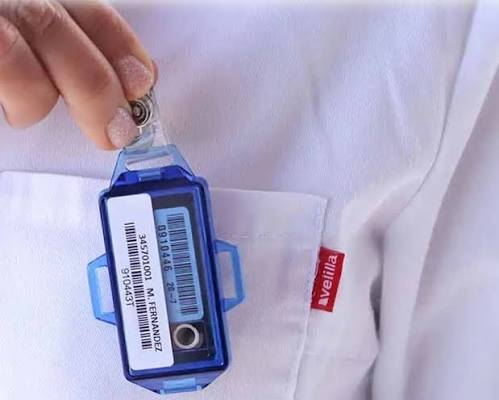
Dosímetro Personal (TLD/OSL)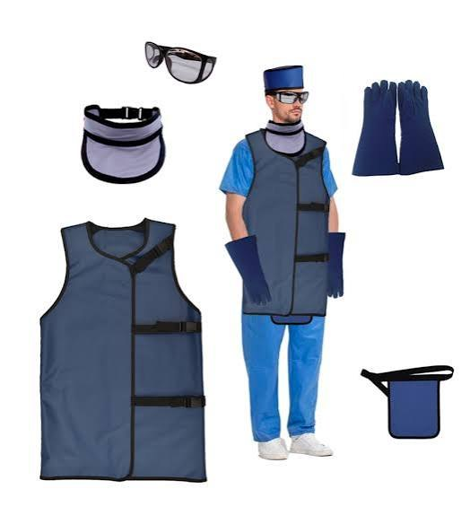
EPP PlomadosDosimetría Personal y Elementos de Protección Plomada
Permite llevar el registro mensual o trimestral de la dosis recibida por cada trabajador, bajo control del Instituto de Salud Pública (ISP):
• Ubicación habitual: A la altura del tórax o bolsillo superior izquierdo.
• Con delantal plomado: Debe ir siempre por debajo del delantal a la altura del tórax/abdomen para medir la dosis real recibida por los órganos protegidos (si se usa un segundo dosímetro de cristalino/cuello, este se coloca por fuera sobre el protector tiroideo).
- Es estrictamente personal e intransferible.
- Nunca llevarlo a casa, no dejarlo expuesto al sol o fuentes de calor ni lavarlo junto con el uniforme.
- Al terminar el turno, guardarlo en el tablero dosimétrico junto al dosímetro testigo, lejos de zonas con radiación.
• Delantal Plomado: Equivalencia habitual de 0,25 mm a 0,5 mm de Pb (atenúa más del 90-95% de la radiación dispersa en radiodiagnóstico).
• Protector Tiroideo: Collarín de 0,5 mm Pb imprescindible en fluoroscopia, hemodinamia y exámenes portátiles.
• Lentes Plomados: Con protección frontal y lateral (0,5 a 0,75 mm Pb) para prevenir cataratas radioinducidas.
• Guantes y Protectores Gonadales: Para inmovilización excepcional y blindaje de pacientes.
- Nunca dobles ni arrugues los delantales plomados; cuélgalos siempre extendidos en percheros especiales para evitar que se quiebre la lámina interna de plomo.
- Realizar control radiográfico o fluoroscópico anual de los EPP para detectar grietas o fisuras ocultas.
Radioprotección en Pacientes Especiales (Embarazo y Pediatría)
El embrión y el feto tienen alta radiosensibilidad (especialmente durante la organogénesis entre las semanas 2 y 8, y el desarrollo del SNC entre semanas 8 y 15):
• Consulta obligatoria: Preguntar siempre con tacto y claridad a toda mujer en edad fértil (12 a 50 años) por la posibilidad de embarazo y fecha de última menstruación (FUM) antes del examen.
• Regla de los 10 días: En estudios electivos de abdomen/pelvis de alta dosis, se recomienda realizarlos dentro de los primeros 10 días desde el inicio de la menstruación.
• Consentimiento y Blindaje: Si el examen es clínicamente impostergable, evaluar alternativas sin radiación (Ecografía o RM); si se realiza Rx/TC, firmar consentimiento informado, colimar al máximo y cubrir el abdomen/pelvis con delantal plomado.
Los niños presentan mayor tasa de división celular (mayor radiosensibilidad) y una esperanza de vida más larga para desarrollar efectos estocásticos:
• Ajuste de Parámetros Técnicos: Reducir kVp y mAs según peso y talla pediátrica; en TC emplear protocolos pediátricos dedicados.
• Uso de Rejilla Antidifusora: Retirar la rejilla (sin Bucky) en lactantes y niños pequeños cuando el espesor anatómico sea menor a 10-12 cm.
• Inmovilización: Preferir inmovilizadores mecánicos (bandas, sacos de arena, Pigg-O-Stat). Si se requiere sujeción humana, debe realizarla un acompañante adulto (nunca una embarazada ni personal del servicio de forma rutinaria) equipado con delantal y protector tiroideo.
- Confirmar protocolo pediátrico o descartar gestación antes de pasar a sala.
- Verificar colimación exacta antes de salir a disparar.
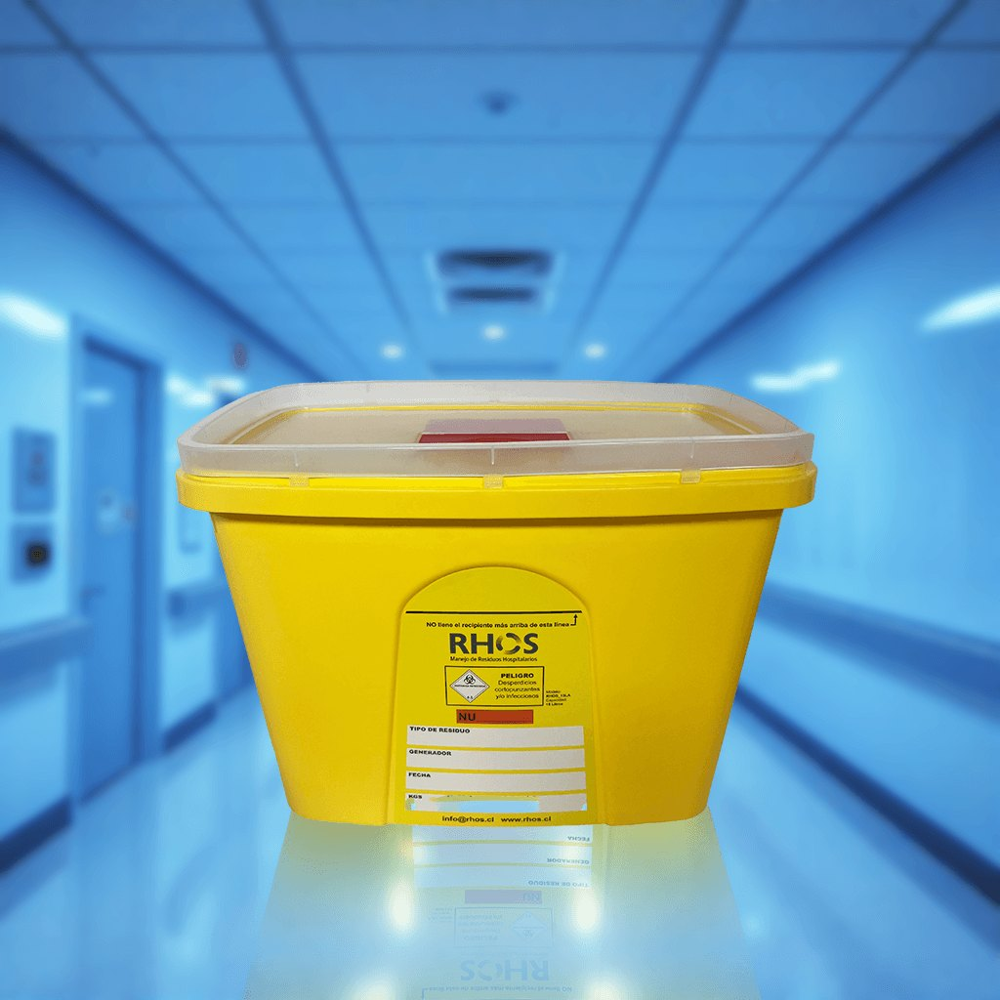
Manejo de REAS (D.S. N° 6)Bioseguridad Hospitalaria, IAAS y Manejo de REAS (D.S. N° 6)
Se aplican en la atención de todos los pacientes para prevenir Infecciones Asociadas a la Atención en Salud:
• Higiene de Manos (5 Momentos OMS): Lavado clínico con agua y jabón o higienización con alcohol gel antes y después del contacto con cada paciente.
• Uso de EPP Clínicos: Guantes de procedimiento ante contacto con fluidos/mucosas, mascarilla quirúrgica o N95/KN95 según aislamiento respiratorio, pechera plástica y antiparras ante riesgo de salpicaduras.
• Aislamientos Hospitalarios: Verificar precauciones adicionales (Contacto, Gotitas o Aéreo) antes de recibir al paciente o realizar un Rx portátil.
• Mesas, Estatitivos y Chasis/Flat Panel: Desinfectar entre pacientes con toallas aprobadas (amonio cuaternario o alcohol al 70%, sin rociar líquido directamente sobre detectores digitales).
• Transductores de Ecografía: Retirar gel residual y realizar desinfección de nivel intermedio/alto (en endocavitarios usar siempre funda protectora estéril + desinfección de alto nivel).
Clasificación y segregación obligatoria en origen según normativa MINSAL:
• Bolsa Negra (Residuos Sólidos Asimilables a Domiciliarios): Papel, envoltorios limpios, toallas de secado de manos.
• Bolsa Amarilla (Residuos Especiales / Biológicos): Gasas o algodones saturados con sangre/fluidos, guantes contaminados, fundas de transductores endocavitarios.
• Contenedor Rígido Amarillo/Rojo (Cortopunzantes): Agujas de venopunción (vías periféricas para medio de contraste), bránulas, bisturíes. Nunca recapsular agujas y llenar máximo hasta 3/4 de su capacidad.
• Contenedor Rojo (Residuos Peligrosos): Restos de fármacos, sustancias químicas tóxicas o inflamables.
- Lava de inmediato la zona afectada con abundante agua y jabón.
- Avisa enseguida a tu tutor/jefatura directa y acude a la unidad de salud ocupacional o mutualidad dentro de las primeras 2 horas para evaluación.